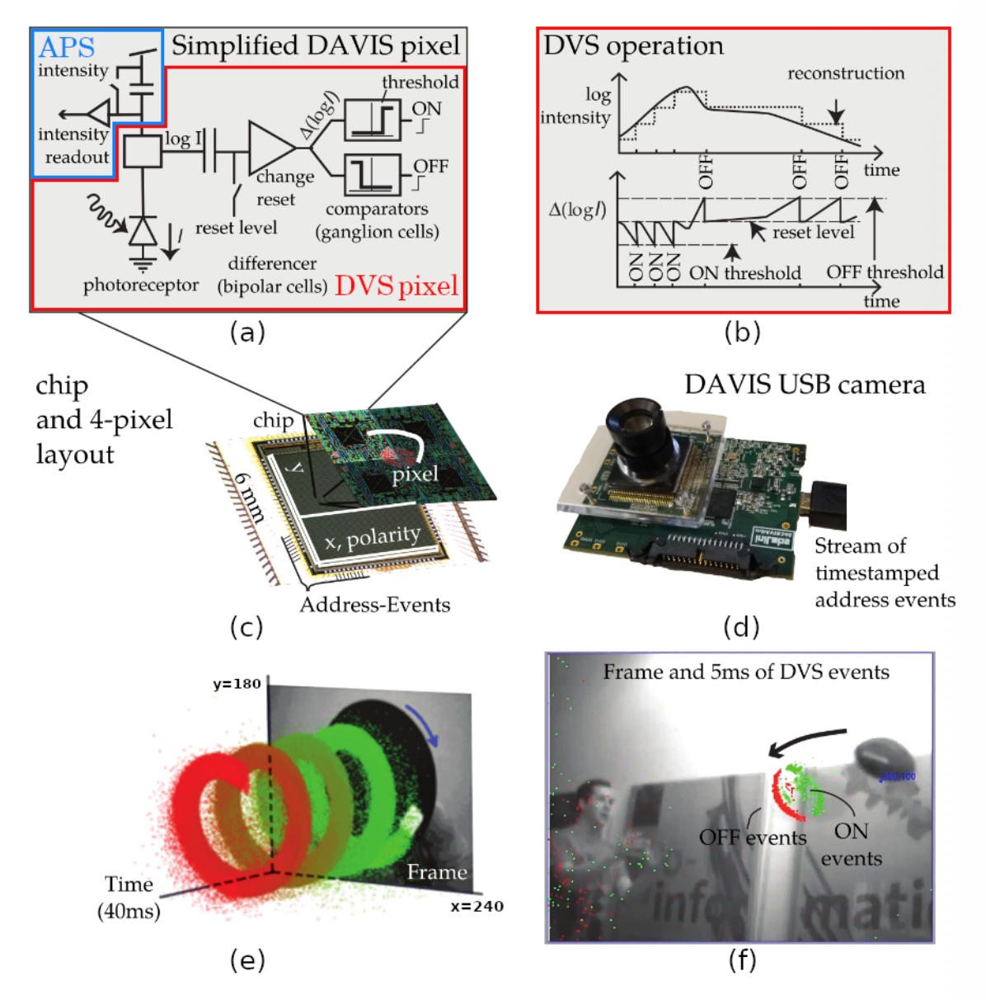
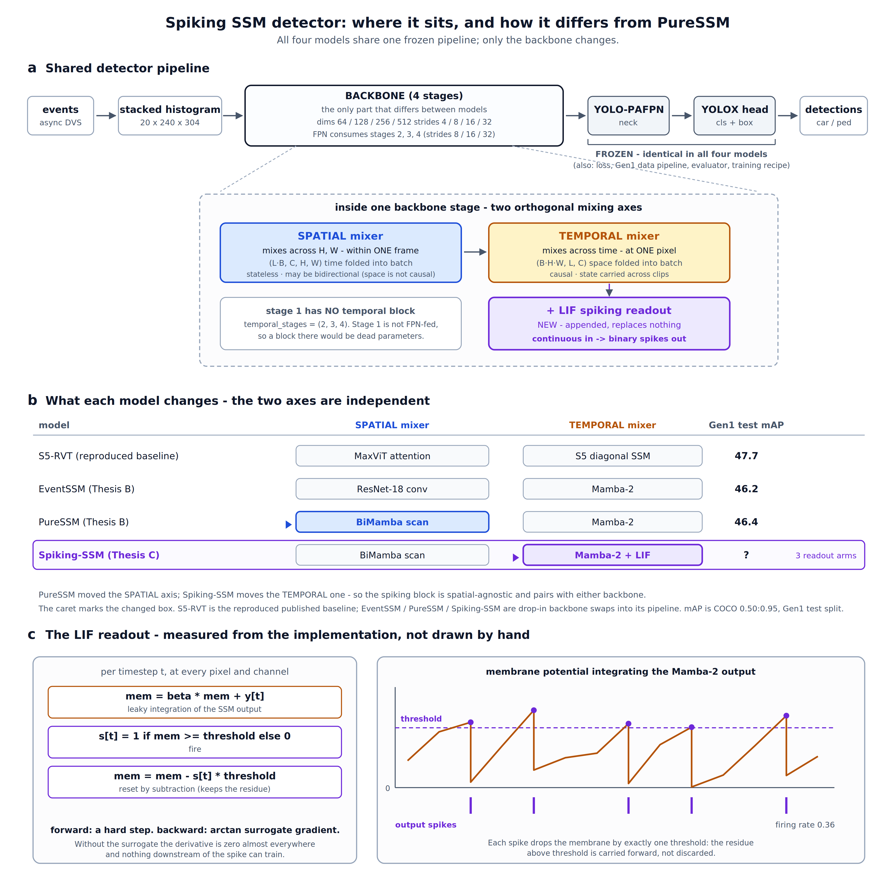
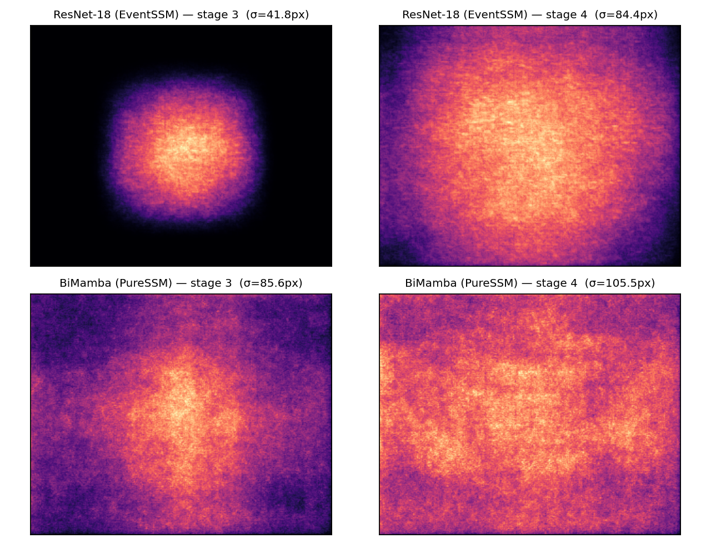

deck/slides/*.html. The live, editable deck (with
PowerPoint/PDF export) is at claude.ai/artifact/NYt2pws5yf3ydGDcFHSuxy.
Layout is approximate here (no slide runtime).Thesis C · UNSW Sydney
A controlled study of SSM backbones on Prophesee Gen1, with a spiking variant
Benas Vaiciulis
Supervisor: Dr Will Midgley
Slide 1 notes. One line to open: I studied what state-space models actually contribute to object detection with event cameras, by changing one part at a time inside a reproduced state-of-the-art pipeline.
The problem

2 / 10
Slide 2 notes. About 60 seconds. Event cameras report per-pixel brightness changes asynchronously, with microsecond latency and very high dynamic range. That suits micro-UAVs where power and weight are tight. SSMs were recently proposed as the natural sequence model for this data: linear-time and they carry a state through time. S5-RVT reaches 47.7 mAP on Gen1. But published comparisons swap several things at once, so we do not know what the SSM itself contributes. Separately, spiking detectors have caught up on accuracy, but nobody has broken down where the cost of spiking comes from.
What I did
Gen1 data
frozen
Backbone
the only part swapped
FPN neck
frozen
YOLOX head
frozen
Evaluator
frozen
47.7
Gen1 test mAP for my reproduction of S5-RVT: an exact match to the paper
1
part changes between neighbouring models, so any difference comes from that part alone
3 / 10
Slide 3 notes. About 60 seconds. First I reproduced S5-RVT exactly: 47.7 test mAP, matching the paper. Then I froze everything else, the data pipeline, the FPN neck, the YOLOX head, the loss and the evaluator, and swapped only the backbone. That makes it a controlled experiment: any change in accuracy comes from the swap and nothing else. One honest difference versus the baseline: my models trained at batch 4 instead of 8.
What I did
BASELINE
Attention for space, S5 SSM for time
MINE · 1
ResNet-18 CNN for space, Mamba for time
MINE · 2
Bidirectional Mamba for space, Mamba for time
MINE · 3
PureSSM plus spiking neurons on the time path
Reproduced from Zubić et al., CVPR 2024
vs baseline: whole backbone
vs EventSSM: only the spatial part
vs PureSSM: only the temporal readout
Data: Prophesee Gen1, driving scenes with cars and pedestrians · Metric: COCO mAP at IoU 0.50–0.95
4 / 10
Slide 4 notes. About 60 seconds. The baseline, S5-RVT, uses attention to look at space and an S5 state-space model for time. EventSSM, my first model, uses a ResNet-18 CNN for space and Mamba for time. PureSSM swaps the CNN for a bidirectional Mamba, so it is state-space all the way through; it differs from EventSSM in the spatial part only. SpikingSSM adds spiking neurons after PureSSM's temporal blocks; it differs from PureSSM in the temporal readout only. Everything is trained and tested on Prophesee Gen1, driving scenes with cars and pedestrians, scored with COCO mAP.
What I did
A leaky integrate-and-fire neuron reads out each Mamba temporal block. Three versions share the same neuron:
PureSSM → analog
cost of the neuron dynamics
analog → graded
cost of sparsity
graded → binary
cost of binarisation
Predicted before training: analog ≥ graded > binary

5 / 10
Slide 5 notes. About 60 seconds. The spiking model adds a leaky integrate-and-fire neuron after each Mamba temporal block; the spatial backbone stays non-spiking, a hybrid like HsVT. The key design choice: three readouts share the same neuron. Analog passes the membrane value through, graded only fires when over threshold but carries a value, binary fires plain spikes. Going PureSSM to analog to graded to binary separates three costs: the neuron dynamics, sparsity and binarisation. I committed to the predicted order, analog at least as good as graded, graded better than binary, before running anything. Published spiking detectors report at most one spiking-vs-non-spiking number; none breaks it down.
6 / 10
Result 1 · Accuracy
| Gen1 test | mAP | AP large | Params |
|---|---|---|---|
| S5-RVT | 47.7 | 50.7 | 18.2 M |
| EventSSM | 46.2 | 44.7 | 19.2 M |
| PureSSM | 46.4 | 47.7 | 16.3 M |
+3.0
AP on large objects over EventSSM: half the gap to the baseline closed, with the smallest model

Receptive field at stage 3: SSM 85.6 px vs CNN 41.8 px. Training widens the SSM's field by 30–34 px; the CNN's barely moves.
Slide 6 notes. About 70 seconds. EventSSM 46.2, PureSSM 46.4, baseline 47.7. The 0.2 difference between my two models is within noise for a single training run, so I call it a tie. The real result is large objects: PureSSM gains 3 AP over EventSSM there, closing about half the gap to the attention baseline, and it is the smallest model at 16.3 million parameters. Why? A gradient-based receptive-field probe shows the SSM backbone sees up to twice as far as the CNN, and its field widens during training while the CNN's barely changes. That is the mechanism behind the large-object gain.
Result 2 · Event-rate robustness
Accuracy kept when the true event rate rises 10×
PureSSM
69.7 %
EventSSM
63.0 %
S5-RVT
62.2 %
At a true 2× rate all three keep about 95–96 %.
The paper credits SSM robustness to rescaling the time step at inference. With its own checkpoint and code:
7 / 10
Slide 7 notes. About 60 seconds. Event cameras produce more events when things move faster, so a detector must cope with rate changes. At ten times the true event rate, PureSSM keeps 69.7 % of its accuracy, the most of any model; EventSSM 63 %, S5-RVT 62 %. The original paper credits this robustness to rescaling the time step at inference. I tested that with the authors' own checkpoint and code, under two protocols. It did not recover accuracy at any operating point, at a true tenfold rate it cost 9 to 13 mAP, and the headline 200 Hz result was not reproducible under the published artefacts. The robustness itself is real; it is just there without the trick. Keep the wording soft: not reproducible under the published checkpoint and code.
Result 3 · The cost of spiking
| 100k steps | Test AP | Step cost | Firing |
|---|---|---|---|
| PureSSM | [__._] | — | — |
| analog | [__._] | [±_._] | [_._] |
| graded | [__._] | [±_._] | [_._] |
| binary | [__._] | [±_._] | [_._] |
Predicted order analog ≥ graded > binary: [held / did not hold]
Energy, stated honestly: only the time path spikes, and spikes feed about 1 % of the detector's operations. The saving needs the spatial backbone to spike too.
8 / 10
Slide 8 notes. About 60 seconds. FILL IN after the Stage 20-21 runs: test AP for the PureSSM 100k anchor and the three readouts, each step's cost with a bootstrap confidence interval, and the firing rate on the final checkpoints. Then say whether the predicted order held. If a step's interval includes zero, say the cost is too small to measure, which is still a result. Current numbers: the binary readout reached 41.8 validation AP at 100k steps; at matched steps the graded readout leads it, 41.6 versus 40.4 at 80k, and the binarisation gap narrowed from 3.5 at 25k to 1.2 at 80k. Be upfront about energy: in this hybrid only the temporal path spikes, about 1 % of the operations, so the contribution is measuring where the accuracy cost of spiking comes from, not an energy saving.
Discussion
Fewest operations (10.0 GFLOP) and the best accuracy per GFLOP (4.63).
But slowest in plain PyTorch (26.9 ms): many small operations. With CUDA graphs it runs at 181 Hz.
The Mamba models carry 144 MB of state per stream, 31× the baseline's 4.7 MB.
EventSSM is the fastest (12.6 ms, 0.44 J per frame) partly because it holds so much state.
One training run per model, so small differences are reported as ties.
50-ms windows set the latency (≈25 ms wait + compute), not the sensor. SSMs keep 62–70 % at 5 ms.
Batch 4 vs 8; drone integration descoped.
9 / 10
Slide 9 notes. About 50 seconds. PureSSM does the least computation and has the best accuracy per GFLOP, but in plain PyTorch it is the slowest because it launches many small GPU operations; captured as a CUDA graph it reaches 181 Hz. The Mamba models keep 144 MB of streaming state per stream, 31 times the baseline: fast because fat. Limits: each model was trained once, so I treat small differences as ties; my models used batch 4 rather than 8; and the original micro-drone obstacle-avoidance aim was descoped so this could be a clean, controlled comparison. Latency: every model bins events into 50-ms windows, so detection waits about 25 ms on average for the window plus the compute time; the sensor's microsecond latency is not used at this setting. The window is a trade-off: with 5-ms windows and no retraining the SSMs keep 62 to 70 percent of their accuracy, PureSSM the most.
Conclusion
1
Reach. SSM spatial mixing sees further, which is why large objects improve.
2
Robustness. Rate robustness is built into the recurrence, not the rescaling trick.
3
Spiking. Its cost splits into dynamics, sparsity and binarisation: [one-line result]
Next: run the spiking model on Intel Loihi 2 via NIR (proposal submitted), make the spatial backbone spike, scale to 1 Mpx data.
Questions?
10 / 10
Slide 10 notes. About 40 seconds. Three takeaways. One: the SSM's spatial mixing sees further, and that is why PureSSM does better on large objects. Two: SSMs are robust to event-rate changes because of the recurrence itself, not the inference-time rescaling the literature credits. Three: the cost of spiking can be split into the neuron dynamics, sparsity and binarisation; FILL IN the one-line result. Next steps: deploying the spiking model on Intel's Loihi 2 through the NIR format, for which a proposal has gone to Intel's neuromorphic research community; making the spatial backbone spike so the whole detector can run on the chip; and testing at higher resolution on the 1 Mpx dataset. Close with the one-sentence story, then take questions.